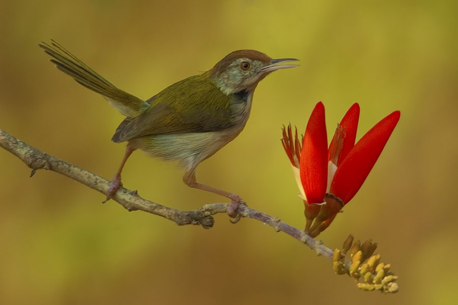

दर्जिनCommon Tailorbird
Orthotomus sutorius · Cisticolidae · BRD-0015

- Scientific name
- Orthotomus sutorius (Pennant, 1769)
- Family
- Cisticolidae
- Hindi
- दर्जिन / दर्जी चिड़िया
- Status here
- native
- IUCN
- LC
When to look कब देखें
Present all year.
दर्जिन / Common Tailorbird
Orthotomus sutorius (Pennant, 1769) — Cisticolidae
दर्जिन — बागों और झाड़ियों की सुईधागे वाली मास्टर-दर्जिन। छोटी-सी तेज़-तर्रार चिड़िया — रूफस टोपी, सफेद छाती, पूँछ ऊपर की तरफ उठी हुई। तुवित-तुवित-तुवित की आवाज़ हर तरफ सुनाई देती है पर चिड़िया आसानी से नहीं दिखती। पास के पेड़-पौधों की बड़ी पत्तियों को बारीक धागे से सिलकर जीवित घोंसला बनाती है — पत्ती को तोड़े बिना। पूर्वी UP के हर घर के बगीचे में यह है — बस ध्यान से देखना पड़ता है।
हिंदी परिचय Hindi Overview
दर्जिन (Orthotomus sutorius) बागों और झाड़ियों की सुईधागे वाली मास्टर-दर्जिन। छोटी-सी तेज़-तर्रार चिड़िया — रूफस टोपी, सफेद छाती, पूँछ ऊपर की तरफ उठी हुई। तुवित-तुवित-तुवित की आवाज़ हर तरफ सुनाई देती है पर चिड़िया आसानी से नहीं दिखती। पास के पेड़-पौधों की बड़ी पत्तियों को बारीक धागे से सिलकर जीवित घोंसला बनाती है — पत्ती को तोड़े बिना। पूर्वी UP के हर घर के बगीचे में यह है — बस ध्यान से देखना पड़ता है।
Quick Identification त्वरित पहचान
| Feature | Description |
|---|---|
| Size | Tiny, active bird (10–13 cm total length); weight 6–10 g; smaller than a sparrow |
| Crown | Bright rufous-chestnut crown cap, contrasting with olive-green upperparts |
| Underparts | Clean white to pale cream, washed with buff on the flanks |
| Tail | Frequently cocked upright; breeding males have two elongated central tail feathers |
| Bill & Legs | Long, slender, slightly decurved pale bill; pinkish-flesh legs |
| Behaviour | Creeps actively through dense low bushes; constructs stitched-leaf nests |
| Voice | Loud, persistent, repetitive tuwit-tuwit-tuwit calls, heard year-round |
Field tip: Any tiny olive-green bird with a rusty red forehead and a long tail cocked upward, calling loudly from a garden hedge, is a Tailorbird. Its unique nest — made by stitching two living leaves together with spider silk and plant down — is a masterclass in avian engineering.
Morphology आकारिकी
Biometrics (subspecies guzuratus, northern India — the form in eastern UP):
| Measurement | Range |
|---|---|
| Total length | 100–130 mm |
| Wing (flattened chord) | 44–52 mm |
| Tail — non-breeding | 38–45 mm |
| Tail — breeding male | 60–85 mm |
| Tarsus | 18–21 mm |
| Bill (culmen from base) | 13–15 mm |
| Weight | 6–9 g |
Crown: Bright rufous-chestnut, sharply contrasting with olive-green upperparts.
Underparts: Clean white to pale buff on flanks.
Bill: Slender, slightly decurved — adapted for probing leaf surfaces for insects.
Tail: Frequently cocked upright; breeding males grow elongated central rectrices up to 5 cm longer than the rest.
Eyes: Pale cream-white iris, giving an alert, wide-eyed expression.
Legs: Pinkish-flesh, strong for clinging to vertical stems and leaf undersides.
Sexes: Similar; male in breeding season distinguished by elongated tail and brighter colours.
Vocalisations
The Common Tailorbird is surprisingly loud for its tiny size.
- Territorial song: A repetitive, high-pitched, metallic chwee-ip... chwee-ip... chwee-ip or tuwit-tuwit-tuwit delivered by the male from a low branch.
- Contact call: A sharp, thin tsee-tsee given as it moves through thick foliage.
- Alarm call: A rapid, buzzy chattering note given when a cat or snake approaches its nest.
Ecological Role पारिस्थितिक भूमिका
Insectivore and arthropod regulator. The Tailorbird forages almost entirely in dense low vegetation, gleaning caterpillars, beetles, ants, aphids, and spiders from leaf surfaces and bark. It is a specialist of the shrub and hedge layer — a foraging niche many larger birds avoid.
Inadvertent pollinator. When probing tubular flowers for nectar (especially Hibiscus and Ixora), the bird transfers pollen on its forehead, acting as an occasional pollinator.
Nest engineer. The species earns its name from a remarkable nesting behaviour: the female uses plant fibres threaded through needle-like holes to stitch the edges of one or two large living leaves together into a cradle, then lines the pouch with soft plant down and spider silk. The leaf remains living and green, providing extraordinary camouflage. This is one of the most sophisticated avian nest constructions for a bird of its size.
Life Cycle / Phenology जीवन चक्र
- Breeding season: March–August; peaks April–June before and during monsoon.
- Nest construction: Female selects and stitches leaves (typically Hibiscus rosa-sinensis, Ficus spp., Musa (banana), Calotropis gigantea, Colocasia (taro)); process takes 3–5 days.
- Clutch: 3–5 eggs; pale greenish-white with red speckles.
- Incubation: ~12 days; both parents incubate.
- Fledging: Chicks fledge at ~14 days; family remains together briefly.
- Pairs: Monogamous; pairs often stay within the same territory year-round.
- Moult: Post-breeding; males lose elongated tail feathers after breeding season.
Host Plants or Prey आहार
Nest plants (leaf stitching): Large-leaved species — Hibiscus rosa-sinensis, Ficus spp., Musa (banana), Calotropis gigantea (FLR-0002), Colocasia (taro).
Prey items:
- Caterpillars (Lepidoptera larvae) — primary prey
- Aphids and mealybugs from leaf undersides
- Small beetles, ants, and small wasps
- Spiders and mites
- Nectar (opportunistically from tubular flowers)
Predators / Natural Enemies शत्रु
- Snakes: Indian Rat Snake (Ptyas mucosa, REP-0002) and vine snakes climb to raid leaf-cradled nests.
- House Crow (Corvus splendens) — raids nests for eggs and nestlings.
- Shikra (Accipiter badius) — primary aerial predator of adults.
- Indian Chameleon (Chamaeleo zeylanicus, REP-0003) — ambushes adults in dense foliage.
Agricultural / Human Relevance कृषि प्रासंगिकता
Beneficial garden insectivore. Consumes large numbers of caterpillars, aphids, and beetles that damage vegetables, ornamentals, and nursery plants. A thriving Tailorbird population in a kitchen garden reduces need for pesticide intervention on soft-bodied pests.
Cultural familiarity. The tuwit-tuwit call is one of the most recognized garden bird sounds across north India. Named दर्जिन (darzin — the seamstress) in Hindi — a direct reference to its sewing behaviour, widely known even among non-birdwatchers.
Indicator species. Presence indicates a garden or hedge structure with sufficient shrub density, leaf litter, and chemical-free management. Disappearance from an urban garden often signals over-pruning or pesticide use.
Expected Locally स्थानीय रूप से अपेक्षित
Not a field record. Written from published accounts for eastern Uttar Pradesh. No confirmed local sighting yet — if you have seen it, that is what the atlas needs.
अभी तक स्थानीय पुष्टि नहीं। यह विवरण प्रकाशित स्रोतों से है, किसी अवलोकन से नहीं।
Common year-round in Basti district gardens, kitchen gardens (baris), hedgerows around agricultural fields, and scrubby vegetation along canal banks. The tuwit call is a constant background sound from dawn onwards. Nests are most easily found June–July in Hibiscus or banana clumps when leaves are stitched but still green; spotting one requires patience as the bird slips silently in and out of cover.
Distribution वितरण
Global range: Native and widespread across South Asia and Southeast Asia, from Pakistan and India through Nepal, Bhutan, Bangladesh, Myanmar, Thailand, Indochina, and southern China to Java.
In India: Widespread and common throughout the country, from the plains up to about 1,500 m elevation in the Himalayan foothills.
In Uttar Pradesh: Common year-round resident throughout all districts, associated with gardens, orchards, scrub, and forest margins.
In Basti district / eastern UP: Highly common resident; found in every village home garden (bari), orchards, hedges, and canal-bank scrub.
Range notes: No significant range changes documented.
Research Questions शोध प्रश्न
- Which host plants are preferred for nest construction in the Basti–Ayodhya region — do birds show preferences between Hibiscus, Calotropis, and banana?
- Does the Tailorbird's foraging reduce aphid loads on kitchen garden plants measurably compared to gardens without the species?
- Are there local variations in call dialect — do birds in village gardens sound different from canal-bank or forested populations?
- How do elongated breeding-season tail feathers affect male flight performance, and does tail length correlate with reproductive success?
- How does urban expansion and hedge removal affect territory size and nest success in peri-urban Basti?
Similar Species मिलती-जुलती प्रजातियाँ
| Species | Key Difference |
|---|---|
| Ashy Prinia (Prinia socialis, BRD-0001) | Grey-brown above, no rufous crown; tail waved rather than cocked |
| Common Chiffchaff (Phylloscopus collybita) | Winter visitor; olive-brown overall, no rufous cap, different call |
Taxonomy & Classification वर्गीकरण
Original description. Orthotomus sutorius was described under the name Motacilla sutoria by Thomas Pennant in 1769 in his work Indian Zoology (p. 9). Type locality: Sri Lanka. The genus name Orthotomus is derived from the Greek orthotomeo (to cut straight), referencing its nest-sewing habits. The species name sutorius means tailor in Latin.
Subspecies. Approximately 9 subspecies are recognised across its wide range. The subspecies occurring in northern India and eastern UP is:
| Subspecies | Authority | Range | Notes |
|---|---|---|---|
| O. s. guzuratus | (Latham, 1790) | Pakistan, Western, Central, and Northern India | UP subspecies; characterized by paler underparts and greyer upperparts than nominate sutorius |
Family and order placement. This species belongs to the order Passeriformes and family Cisticolidae (cisticolas and allies). Cisticolidae contains ~160 species, mostly African. The genus Orthotomus contains ~13 species of tailorbirds, all restricted to Asia.
Phylogenetic notes. Molecular phylogenetic analyses place tailorbirds in a distinct clade within Cisticolidae, indicating they are not closely related to true warblers (Sylviidae) where they were historically placed.
IUCN status rationale. Assessed as Least Concern (LC). Widespread and highly adaptable, the population is stable. It thrives in gardens, agricultural margins, and urban parks, which provide abundant edge habitats.
Photo Gallery फोटो गैलरी
Note: Add field photos tomedia/species/common_tailorbird/
फोटो निर्देश: घोंसला बनाते समय पत्तों को सिलती हुई दर्जिन, प्रजनन काल में लंबी पूँछ वाला नर, और बगीचे में फुदकती हुई चिड़िया।
Photos needed आवश्यक फोटो
- [ ] Female stitching leaves together (पत्ते सिलती दर्जिन)
- [ ] Male in breeding plumage showing long tail (लंबी पूँछ वाला नर)
- [ ] Stitched nest cradle showing fibers (सिली हुई पत्तियों का घोंसला)
- [ ] Foraging under Hibiscus leaves (हिबिस्कस के नीचे चरती हुई)
Atlas Connections संबंधित प्रजातियाँ
- Giant Milkweed — host plant for leaf-stitching; also feeds on Calotropis-associated insects (FLR-0002)
- Ashy Prinia — fellow Cisticolid warbler sharing the village shrub insectivore guild (BRD-0001)
- Indian Chameleon — chameleon is an ambush predator of tailorbirds in hedges (REP-0003)
- Indian Rat Snake — predator of tailorbird eggs and nestlings (REP-0002)
References संदर्भ
- Pennant, T. (1769). Indian Zoology. London, p. 9. [original description]
- Latham, J. (1790). Index Ornithologicus. Vol. 2. London. [description of guzuratus]
- Ali, S. & Ripley, S.D. (1987). Handbook of the Birds of India and Pakistan. Vol. 8. Oxford University Press, New Delhi.
- Grimmett, R., Inskipp, C. & Inskipp, T. (2011). Birds of the Indian Subcontinent. 2nd ed. Christopher Helm, London.
- Rasmussen, P.C. & Anderton, J.C. (2005). Birds of South Asia: The Ripley Guide. Smithsonian Institution, Washington.
- BirdLife International (2024). Orthotomus sutorius. IUCN Red List of Threatened Species. Ver. 2024.
- GBIF Occurrence Data — Orthotomus sutorius, Uttar Pradesh (2010–2025).
Source file: species/fauna/birds/common_tailorbird.md